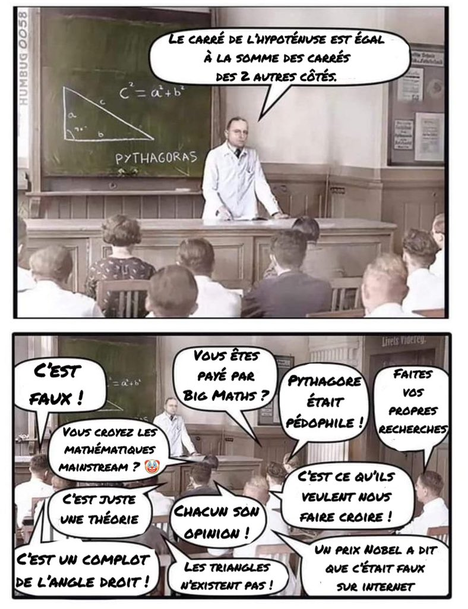

Une masterclass par Victor Brito pendant la formation développeur web et web mobile à la Wild Code School (promotion remote février 2023)
https://webdevbynight.github.io/wcs-remote-fr-feb-2023-css3-css4-n-existent-pas/

#IlsCroiventNousSachons
Version majeure = niveau (level)
Version mineure = révision (revision)
Version corrective = document revu avec changements et erreurs listés (revised)
display: block;
display: inline;
display: list-item;
display: none;
display: run-in;
display: compact;
display: marker;
display: table;
display: inline-table;
display: table-caption;
display: table-header-group;
display: table-footer-group;
display: table-row;
display: table-row-group;
display: table-column;
display: table-column-group;
display: table-cell;
display: inherit;
color: orange;
Plutôt parler de CSS, tout court
Plutôt réserver les numéros aux niveaux des modules
Les modules évoluent chacun à leur propre rythme : difficile de leur donner un numéro les englobant tous
.reset {
all: initial; /* CSS (tout court), niveau 5 du module Cascading and Inheritance */
}
.element {
display: grid; /* CSS (tout court), niveau 3 du module Display */
grid-template-columns: repeat(2, 1fr); /* CSS (tout court), niveau 2 du module Grid Layout */
gap: 20px; /* CSS (tout court), niveau 3 du module Box Alignment */
}
@media (width >= 768px) { /* CSS (tout court), niveau 4 du module Media Queries */
body {
min-height: 100dvh; /* CSS (tout court), niveau 4 du module Values and Units */
}
}
@scope (.dark-theme) { /* CSS (tout court), niveau 6 du module Cascading and Inheritance */
a {
color: plum;
}
}
Des questions ?